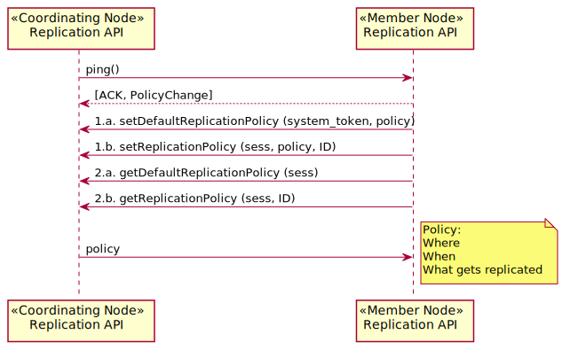

Use Case 08 - Replication Policy Communication¶
- Revisions
View document revision history.
- Goal
Communication of replication policy metadata between Member Nodes and Coordinating Nodes.
- Summary
The replication policy of Member Nodes (MN) indicates factors such as the amount of storage space available, bandwidth constraints, the types of data and metadata that can be managed, and perhaps access control restrictions. This information is used by Coordinating Nodes (CN) to balance the distribution of data packages throughout the DataONE system to achieve the goals of data package persistence and accessibility.
Initial implementation of the infrastructure emphasizes the preservation goals of replication, i.e. ensuring sufficient copies of data and metadata objects are available to ensure ongoing access to the content. The replication system offers the possibility of more dynamic control over the flow of information between systems to support science research. For example, the replication services may be exploited as a mechanism for staging data in preparation for experiments at HPC nodes or centers.
- Actors
Member Node, Coordinating Node
- Preconditions
Member Node is registered with a Coordinating Node
Member Node is operational
- Triggers
A Member Node changes available capacity, bandwidth or some other operating characteristic
A Member Node changes available services
A Member Node software stack is updated (e.g. new version)
- Post Conditions
The DataONE system is updated with current state of available resources
Change in replication policy may trigger adjustments to content that is replicated to that node (e.g. if storage capacity shrinks or is enlarged)
Operation is logged
Watchers are notified in change in DataONE system property
Error
Figure 1. Use case 08.
Figure 2. Communication of Replication Policy Metadata
Notes
The goal as stated originally for this use case was “Communication of replication policy metadata among Member Nodes and Coordinating Nodes.”
There should be some restriction on how often replication policy can be changed to avoid thrashing that might occur for example, if a MN flips between significant differences in storage capacities (low to high, then low again).

Related Topics
- Documentation Overview
- Use Cases
- Previous: Use Case 06 - MN Synchronize
- Next: Use Case 09 - Replicate MN to MN
- Use Cases